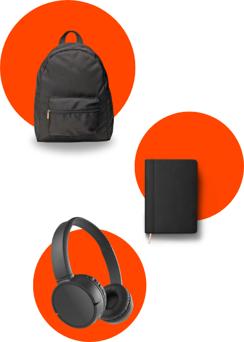
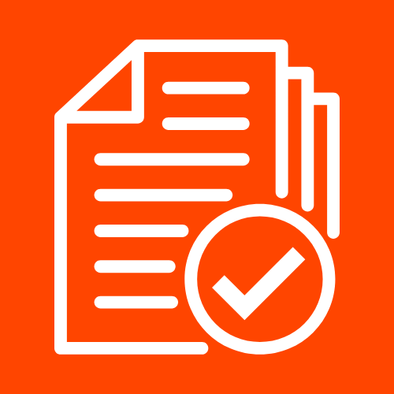
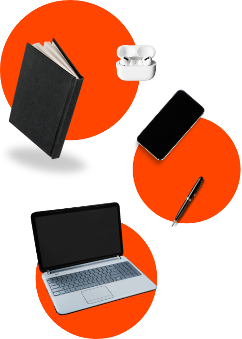

Encontre o que se perdeu, sem perder tempo!
O LocalizeAqui conecta alunos, funcionários e administradores, simplificando o registro e a localização de objetos perdidos nas escolas. Com uma interface fácil e prática, agilizamos a busca para que nada fique para trás.

Nossas
Funcionalidades
Busca
Busca Rápida e Organizada: Utilize filtros e categorias para localizar seu objeto de forma ágil.Comunicação
Comunicação Direta: Conecte-se com o setor responsável para agilizar a devolução.

Registro
Registro de Itens: Cadastre qualquer item perdido para facilitar sua devolução.Notificação
Notificações: Receba avisos por e-mail ou WhatsApp sobre novos itens encontrados.

Com o LocalizeAqui, recuperar seus pertences ficou muito mais fácil e rápido! Nossa plataforma ajuda a economizar seu tempo, traz segurança e promove uma organização completa no ambiente escolar, incentivando a responsabilidade e o cuidado com seus objetos pessoais.
Se você perdeu ou encontrou algum pertence, não se preocupe! Nosso sistema foi criado para que você possa registrar o item de forma simples e acessível. Basta acessar o cadastro no site e preencher as informações do item. Assim, facilitamos a devolução e garantimos que todos os objetos tenham um destino certo.